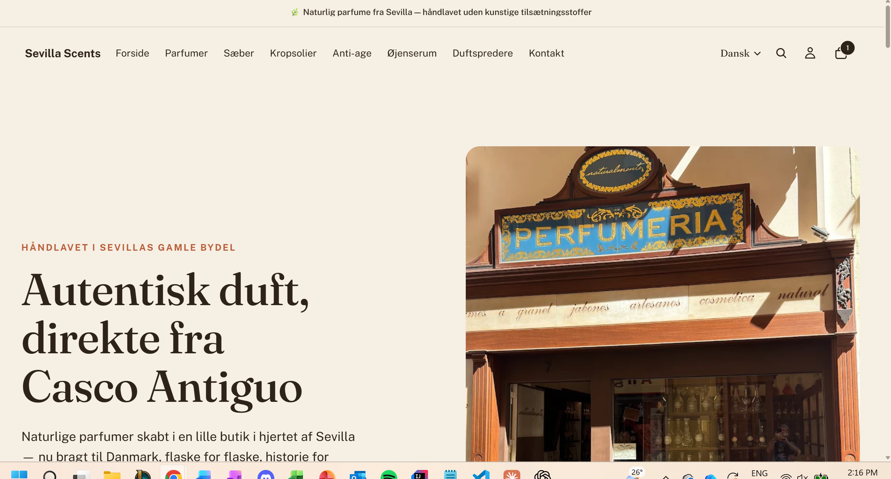

Aarhus roots. International perspective.
Julius Haaber
Nielsen
Connecting business, technology and people.
I study Global Business and Technology at VIA University College, specialising in software. My experience spans customer service at Q8, military service in the Royal Life Guards and volunteer teaching in Tanzania.
I enjoy understanding how things work, taking responsibility and turning ideas into something practical.
What I bring
A practical outlook,
across different settings.
People & responsibility
At Q8, I worked with customers and everyday station operations. As an ungeminister, I helped colleagues organise meetings about employee wellbeing.
Business & technology
My studies combine software development with economics and market analysis. Projects have taken me from a JavaScript game to a heating-system application.
An international perspective
Teaching in Tanzania and studying in Sevilla have given me experience of working and learning in different cultural settings.
From Sevilla to a personal project
Sevilla Scents
My exchange in Spain led me to develop a Shopify website for perfumes and other products from Sevilla. It brings together my interests in business, web development and the story behind a product.
See the project
Beyond work and study
Curious about places, people and ideas.
I am from Aarhus and enjoy travelling, sports, and spending time with friends and family. I like learning through new experiences, whether that means living abroad or working on a project of my own.